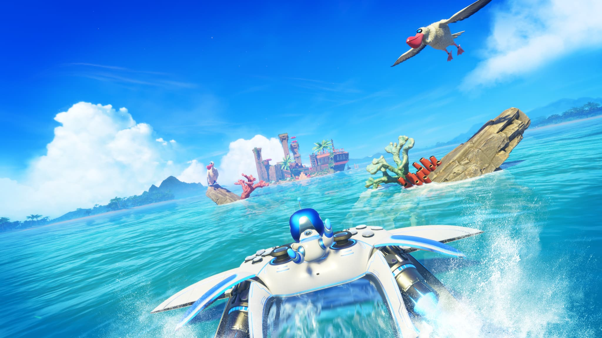

🚀 Une épopée galactique
Astro Bot n'a pas été le meilleur jeux de l'année 2024 pour rien, c'est un chef d'oeuvre!! Tout d'abord, les sensations avec la manette dualsense sont incroyables et les graphismes sont eux, magnifiques. On accompagne notre robot préféré, astro dans une épopé dans différentes galaxies On dispose de plusieurs galaxies qui,elles,sont constitués de plusieurs mondes à explorer Dans chaque monde,on trouve des bots à sauver,des pièces à collecter et des défis à relever grâce à différents pouvoirs que l'on obtient. L'histoire n'est pas le point fort de ce jeu mais est rattrapé par la diversité de gameplay.

🦾 Points positifs
- Les sensations exceptionnelles avec la manette dualsense.
- La grande diversité de gameplay.
- Le plaisir que l'on a a jouer à ce jeu.
- Des graphismes époustouflants.
❌ Points négatifs
- Une histoire trop simpliste.
🌍 Notre avis
Astro bot est un excellent jeu dans lequelle on prend du plaisir à jouer. Une grande diversité de gameplay avec des excellents graphismes et de très bonnes sensations avec la manette dualsense. C'est le mario de la playstation.L'histoire est peut-être en dessous mais le jeu est tellement agréable à jouer que l'on ne s'en soucie pas. On vous recommande vivement de l'acheter, vous ne serez pas déçu!
✍️ Notre note
⭐️⭐️⭐️⭐️⭐️